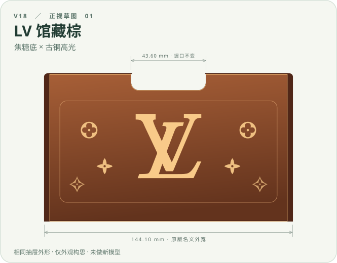
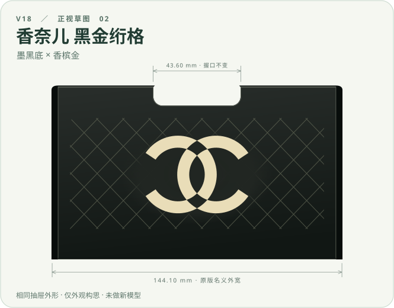
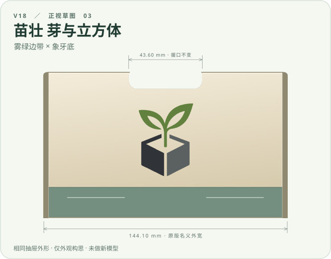

框与屉
单格名义外宽 172、深 240、高 100 mm。全组主体高 200；顶榫多 2.70，最高 202.70。每只屉外廓 144.10 × 230 × 86 mm，工作托面 Z10，名义总横向游隙 0.60 mm。
离线说明书 · 平底双列双层 H100 套件
一款平底侧板打六件：上、下层各三件，左右两只抽屉在每层共用一件 10 mm 中板。V18 所有梁接头统一用单头 T 杆。六块侧板不再有前／后下横穿中板的圆孔，两面各用各自的 T 槽。底面保留 V17 的平底和上下叠装定位孔，层距仍为 100 mm。
原寸 2 × 2 总装： 下载闭合总装 STEP · 下载抽屉拉出总装 STEP
打印 3MF： 下载单格 Bambu 工程（19 件，未切片）
01 / 自定义尺寸 · 两个独立模式
可以先调一只抽屉的宽、深、高，也可以切到网格规划整柜。两个模式各自保存当前尺寸，共用下方的实时 3D 视窗。原寸装配与配合限制见后文。
只改这一格，不影响多模块方案。宽为带两块侧板的单格外宽，高为一层框架高度。
列头和行头直接改 mm。点起点，再点对角选矩形；键盘可用方向键移动焦点、Shift + 方向键扩选。缩小若裁到已有模块会拒绝，不丢数据。
未选格子
拖动旋转，滚轮缩放。米色为抽屉，绿为侧板，橘色为合并占位或冲突界面。
导向净宽与制造范围：连续标准格名义外宽是列宽之和减 17.30 ×（列数 − 1），共板时只保留一个边界。删除保留规划格位但不画该处抽屉、梁和专属侧板；相邻格仍可能留一块共边。合并只画大屉与跨距，不补编新梁、锁或托轨。不同深度保留共同前线，后定位若不齐不能直接做。本包 STEP 是表中列出的 V18 原寸，不随网页尺寸改变；通用网格 JSON 只保存布局，不能作为生产 STEP 输入。
02 / 设计与原寸
单格名义外宽 172、深 240、高 100 mm。全组主体高 200；顶榫多 2.70，最高 202.70。每只屉外廓 144.10 × 230 × 86 mm，工作托面 Z10，名义总横向游隙 0.60 mm。
板截面最大宽 17.30：中腹板 10，两边工作托轨各出 3.65 mm。同件始终前对前，不前后倒换、不倒置。上下靠板面直接承压，不加独立垫片、盖帽或横桥。
保留 Ø5.00 定位榫，突出 2.70 mm。下孔前 X5.80 × Y5.40，后 X5.80 × Y6.90，深 3.225 mm。叠装时侧板端面承压；榫不在孔底承压，也不限制上拔。孔底名义余量 0.525 mm。
例如柜内 350 × 250 mm，居中摆放用原外廓左右各约 11.65、前后各 5 mm。门口最窄处、铰链和工具空间不包含在这两个数中。
每个抽屉格的前梁两端各一杆一轮、后梁两端各上／下两对，合计 6 个单头 T 杆和 6 个偏心轮。中板只共享板身，每一面的杆和锁轮独立。
V18 六块侧板不再开用于前／后下双头杆的横穿圆孔。V17 的平底（两处原 1.20 mm 让位凹位已去掉）、托轨、叠装定位、Ø2.00 拨片轴孔及其装入键位不变。
两种在线下运行的 3D 模式都只画包络与摆放，不重建锁孔、拨片和定位件。V18 的直接打印零件见下表；特殊尺寸或网格上的合并／混深方案，需要另做 CAD 与装配校验。
3D 自定义和热床读数只检查名义尺寸与单件外接框，不考虑摆盘、裙边、支撑或桥接。柜门、铰链、抽屉前方和背面装配空间要另量。
03 / 打印零件清单
点击名称打开对应单件 STEP。单格仍是 19 件：2 侧板、前／后梁各 1、抽屉 1、拨片 2、单头 T 杆 6、偏心轮 6。2×2 中 4 根旧双头杆换成 8 根单头 T 杆，整组净增加 4 件；Reference 的 74 实体总装仅供查看，不整组打印。
| 编号 / 文件 | 份数 | 单件 CAD 外框 X × Y × Z / mm |
|---|---|---|
| 01 通用平底侧板（双面 T 槽） | 6 | 17.30 × 240.00 × 102.70 |
| 02 前梁 | 4 | 137.40 × 16.00 × 9.80 |
| 03 后 X 梁 | 4 | 144.70 × 10.90 × 100.00 |
| 04 签名抽屉 | 4 | 144.10 × 230.00 × 86.00 |
| 05 左手短轴拨片 | 4 | 14.66 × 3.00 × 4.91 |
| 06 右手短轴拨片 | 4 | 14.66 × 3.00 × 4.91 |
| 09 前左单头 T 杆 | 4 | 15.68 × 5.10 × 4.92 |
| 10 前右单头 T 杆 | 4 | 15.68 × 5.10 × 4.92 |
| 11 后下左单头 T 杆 | 4 | 7.37 × 2.40 × 2.31 |
| 12 后下右单头 T 杆 | 4 | 7.37 × 2.40 × 2.31 |
| 13 后上左单头 T 杆 | 4 | 7.37 × 2.40 × 2.31 |
| 14 后上右单头 T 杆 | 4 | 7.37 × 2.40 × 2.31 |
| 15 左前偏心轮 | 4 | 8.20 × 11.20 × 8.20 |
| 16 右前偏心轮 | 4 | 8.20 × 11.20 × 8.20 |
| 17 左后下偏心轮 | 4 | 3.85 × 5.26 × 3.85 |
| 18 右后下偏心轮 | 4 | 3.85 × 5.26 × 3.85 |
| 19 左后上偏心轮 | 4 | 3.85 × 5.26 × 3.85 |
| 20 右后上偏心轮 | 4 | 3.85 × 5.26 × 3.85 |
04 / 从柜外装起
短浅前梁与前 T 槽朝柜门，带 X 和上下锁位的后梁朝里；上榫朝上。每层三块侧板放同一个方向。先试一套 T 槽、单头杆和偏心轮，核对滑入、抓头及反向解锁。
前梁从空屉格内的唯一大工具口操作；后梁从背面操作。所有单头 T 杆沿深度 Y 方向从通道端进入：前杆从朝柜门的一端沿 +Y 向里进，后下和后上杆从背面沿 −Y 向前进。T 肩挡住杆的横向拉力，杆不横穿侧板。
每格两侧各装前、后下、后上 3 根单头 T 杆。梁沿 X 抵住对应侧板承肩后，再锁每个偏心轮。中板两面的接头可以分别解锁；这不等于可以抽走共用中板。前后和上下轮不混装。
取下屉体再装左右手短轴拨片，装入角约 120°；通常工作范围 0–90°。外板只装靠各自抽屉的一面，中板两面都装。叠放前先完成下层拨片安装，再转回 0–90° 工作区。叠好后若要拆装下层拨片本身，先卸载并抬离上层，恢复约 120° 服务角所需空间。
先在柜外把上层做成独立空框，垂直对准三块板的前后榫孔，由上向下落下。三个接触面同时坐实，不能只挨到一根榫；不用垫片或盖帽。
先慢开验证两边拨片。原开放总装只把右上屉前移 110.5 mm，是展示位置而非实物额定行程。需要整屉退出时先卸载、回推卸力，再将左右拨片移至约 90° 释放位，托住抽屉退出。拆抽屉不等于拆拨片，不必为此抬上层。
05 / 配合审核
先分清零件在装好后是否仍需运动。固定件靠台肩或偏心轮保持位置；孔不能紧到装不进去。抽屉滑动、偏心轮转动及杆件装入保留各自余量。拨片的同名义轴孔单独核对，不能把这项设置套用到其他运动部位。
| 界面 | 用途与本版处理 | 验证方法 |
|---|---|---|
| 上下侧板定位榫／孔 | 沿用 V17 固定叠放配合：前孔 X5.80 × Y5.40，后孔 X5.80 × Y6.90。对 Ø5.00 榫，X 总余量 0.80；前 Y 总余量 0.40，后 Y 总余量 1.90 mm。 | 对准三块侧板同步落座，确认不顶底、不摇晃，不靠硬压入位。 |
| 通用板两面的单头 T 杆通道 | 旧前／后下横穿圆孔取消；各 T 槽从对应前／后端开口。中板两面的杆分别由自身 T 肩承拉，不通过对侧杆传力。两根相对单头杆的名义 X 向端距：前 4.10 mm，后下 11.096 mm。两个位置各取左右杆 13 个插入姿态，对侧杆已在位，未发现相交。 | 空架试两面各自插杆、锁紧和解锁，确认槽肩完整、插入没有毛刺。 |
| 梁端、原 T 肩、偏心轮座 | 梁端承肩名义面贴面，偏心轮转动抓头并夹紧，不靠孔轴过盈。前/后轮的名义径向余量分别为 0.180 / 0.0846 mm；活动轮座和 T 肩键式可拆杆的原插入通道不收紧。 | 确认梁端与肩坐实，轮能从开位转到锁位，再可逆释放。 |
| 抽屉／托轨、短轴拨片／轴座 | 导槽宽 144.70，屉宽 144.10，横向总余量 0.60 mm。拨片 Ø2.00 轴配 Ø2.00 圆轴孔，CAD 名义径向余量为 0；不改键位。0–90° 用于工作及取屉，约 120° 仅用于拨片装拆。 | 四处按轴对中时，CAD 工作扫掠和单层装拆采样无相交；径向错位 0.020 mm 的试算发生干涉。整套打印前，先做不同朝向的拨片和孔小样。 |
上表是 CAD 名义尺寸差，不是打印公差，也不保证实物能顺转。V17 原叠放定位几何在 63 个采样（X ±0.15 mm、Y ±0.08 mm、转角 ±0.025° 的测试组合）中无相交；V18 继承该定位几何。这不等于实物装配公差。拨片给零设计余量：先试孔缩和转动；若小样发紧，可另做 Ø2.10 mm 对照小样，不是本包默认值。不得靠硬拧补偿。
06 / 打印与验收
先试 Ø2.00 拨片、前叠装定位孔和单头 T 槽接头。拨片不得卡死；单头杆应从对应前／后端顺利滑入，轮应能锁合和逆向退出。不要用敲打补偿打印误差。
侧板 Z0 大面落床、上榫向上；只保留需要的底部定位孔。小拱窗、独立 T 槽和拨片轴孔的打印效果自行检查。用自己的材料、喷嘴和切片器确认桥接、支撑及轮的手感。随包 3MF 是单格（19 件）的 Bambu Studio 摆盘工程，不是整组 2 × 2。三盘分别 1／4／14 件，P1S 0.4 mm 喷嘴和 Generic PETG 全局预设；未切片、无 G-code。机器或材料不同时，先更换预设。
原寸闭合／拉出总装各 74 实体；精确装配和回读结果以随包验证为准。固定叠放及拨片仅通过文档列出的 CAD 几何采样，不等于实物装配验收。没有实物疲劳、承载或防倾覆测试；组合必须有可靠柜体支承和防移动安排。
07 / 文件与资源
先解压完整 ZIP，再打开本页。如果只单独拿出 HTML，3D 与说明仍可用，同包 STEP 链接则需把对应目录放回原位。
08 / 外观选样
同一个 V18 抽屉，四种正面。三款均在握口下方构图，V18 素面仍是默认打印件；本页不更改现有 STEP 或 3MF。

平整无标记，用于与其他三版对照；不是新 STEP。

沿用既有 LV 叠字与三种花型；图案在把手下方居中。

沿用料盘双 C（保留连接桥留白）；菱格只作外观草图。

使用原始个人标识、比例和配色；底部色带作区分。
草图中的颜色、菱格、色带和标识仅用于比较。尚未决定凹字、凸字、嵌片或换色做法，也没有新增可打印模型。请先确认样式，再单独决定实现。
第二轮 · 侧壁真镂空： 比较贯穿孔并调孔形、疏密和连筋 · 三款可直接下载的抽屉 STEP。封闭版仍是默认，不改变原 STEP 或 3MF。